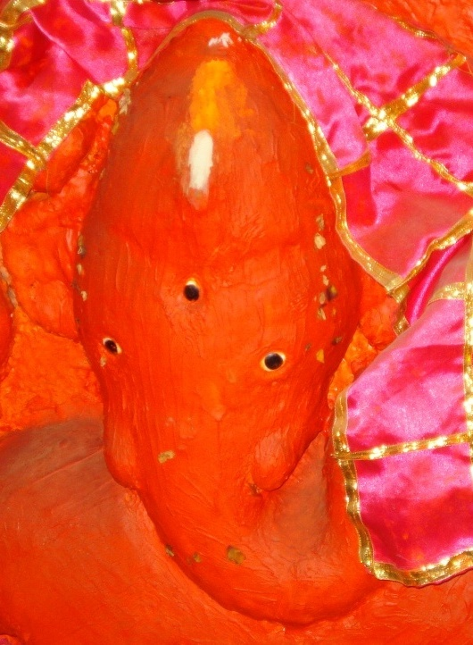

<?xml version="1.0" encoding="UTF-8"?><rss version="2.0"
	xmlns:content="http://purl.org/rss/1.0/modules/content/"
	xmlns:wfw="http://wellformedweb.org/CommentAPI/"
	xmlns:dc="http://purl.org/dc/elements/1.1/"
	xmlns:atom="http://www.w3.org/2005/Atom"
	xmlns:sy="http://purl.org/rss/1.0/modules/syndication/"
	xmlns:slash="http://purl.org/rss/1.0/modules/slash/"
	>

<channel>
	<title>VIGHNA RAJA VINAYAK &#8211; Varanasi Temples</title>
	<atom:link href="index.html" rel="self" type="application/rss+xml" />
	<link>../../../../index.html</link>
	<description>Temples of Varanasi as referred to in Kashi Khand</description>
	<lastBuildDate>Thu, 19 Jun 2025 05:16:46 +0000</lastBuildDate>
	<language>en-US</language>
	<sy:updatePeriod>hourly</sy:updatePeriod>
	<sy:updateFrequency>1</sy:updateFrequency>
	<generator>https://wordpress.org/?v=4.6.29</generator>
	<item>
		<title>VIGHNA RAJA VINAYAK</title>
		<link>../../../../vinayak-temples/vighna-raja-vinayak/vighna-raja-vinayak/index.html</link>
		<pubDate>Fri, 07 May 2010 02:06:34 +0000</pubDate>
		<dc:creator><![CDATA[ramana]]></dc:creator>
				<category><![CDATA[VIGHNA RAJA VINAYAK]]></category>
		<category><![CDATA[Vinayak Temples]]></category>

		<guid isPermaLink="false">../../../../p=74.html</guid>
		<description><![CDATA[(VIGHNA RAJ VINAYAK) Vighna Raja Vinayak is located at J-12/32, Chitrakoot Talab.  This place is better known as Ram Lila Ground wherefrom the procession of Ram Lila starts. Vighna Raja Vinayak is worshipped for Siddhi.  Siddhi may mean attainment of supernatural powers or success or prosperity.  Here, one may take the meaning of success and [&#8230;]]]></description>
				<content:encoded><![CDATA[<p></p>
<p style="text-align: center;"><strong>(VIGHNA RAJ VINAYAK)</strong></p>
<p>Vighna Raja Vinayak is located at J-12/32, Chitrakoot Talab.  This place is better known as Ram Lila Ground wherefrom the procession of Ram Lila starts. Vighna Raja Vinayak is worshipped for Siddhi.  Siddhi may mean attainment of supernatural powers or success or prosperity.  Here, one may take the meaning of success and prosperity.</p>
<h3>TYPES OF POOJA</h3>
<p>The place of worship is open from 06.00 a.m. to 11.30 p.m. and 04.00 p.m. to 09.00 p.m.  Aarties are performed in the morning and evening.   The place of worship is practically inside a private house.  The timings may be flexible.</p>
]]></content:encoded>
			</item>
	</channel>
</rss>
